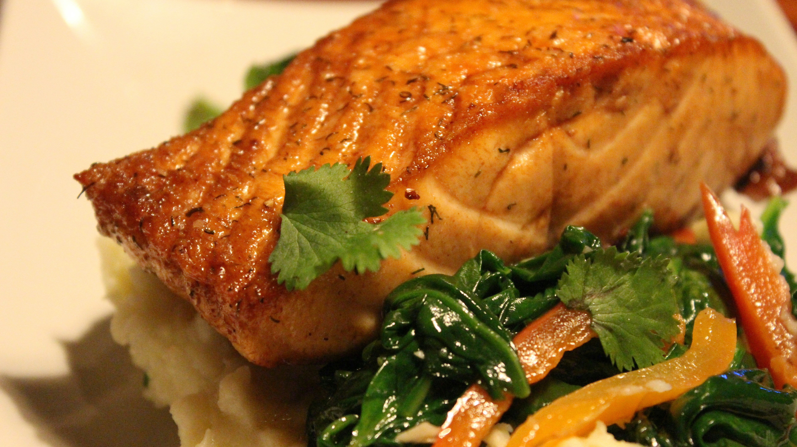

Home
Simple Baked Salmon

Photo by
jeff ahmadi
on
Unsplash
Description
Flaky salmon fillets baked to perfection with lemon and herbs. This easy
and healthy recipe is ideal for a quick and satisfying meal for two.
Ingredients
- 2 (6 ounce / 170g each) salmon fillets, skin on or off
- 1 tablespoon olive oil
- 1/2 lemon, thinly sliced
- 1/2 teaspoon dried dill
- 1/4 teaspoon garlic powder
- 1/4 teaspoon salt, or to taste
- 1/8 teaspoon black pepper, or to taste
Steps
-
Preheat your oven to 400°F (200°C). Line a baking sheet with parchment
paper for easy cleanup. Pat the salmon fillets dry with paper towels.
This helps them cook better and get a nicer finish.
-
Place the salmon fillets on the prepared baking sheet. Drizzle 1
tablespoon olive oil over the salmon. Sprinkle 1/4 teaspoon garlic
powder, 1/2 teaspoon dried dill, 1/4 teaspoon salt, and 1/8 teaspoon
black pepper evenly over both fillets. Arrange the 1/2 lemon, thinly
sliced, over the salmon.
-
Place the baking sheet in the preheated oven. Bake for 12-15 minutes, or
until the salmon is cooked through and flakes easily with a fork. The
exact cooking time depends on how thick your salmon fillets are. Fish is
done when it reaches an internal temperature of 145°F (63°C).
-
Carefully remove the baking sheet from the oven. Serve the baked salmon
immediately. You can offer extra lemon wedges on the side for squeezing
over the fish.
Home